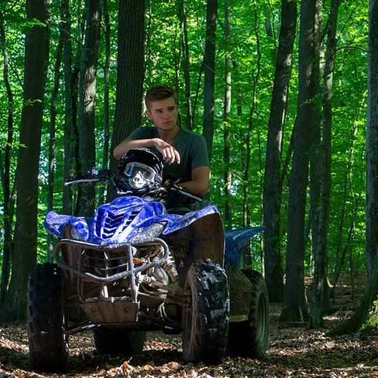

About Me
Nazywam się Andrzej Jurga. Jestem uczniem Technikum Komunikacji im. Hipolita Cegielskiego. Uwielbiam tworzyć a programowanie otworzyło mi drogę do wykorzystywania komputera przy poznawaniu świata. Zaczynałem od C++, ponieważ najłatwiej było trafić na materiały do jego nauki. Cieszę się z tego wyboru gdyż, dało mi to solidne podstawy w dalszym rozwoju. Obecnie zajmuję się głównie projektami, które sam sobie narzucę. Efekty mojej pracy nad części z nich można zobaczyć na moim GitHubie.
Projekty:
Fraktal explorer
Jest to prototyp gry, w którym można zwiedzać legendarny zbiór mandelbrota.Kalkulator trygonometryczny
Pozwala na graficzną ilustrację przebiegu funkcji trygonometrycznychSystem podlewania
Bada wilgotność gleby oraz dostarcza wodę roślinąAPI kalendarz Google
Pobiera informację z prywatnego kalendarza i przerabia je na wykresyTechnologie: